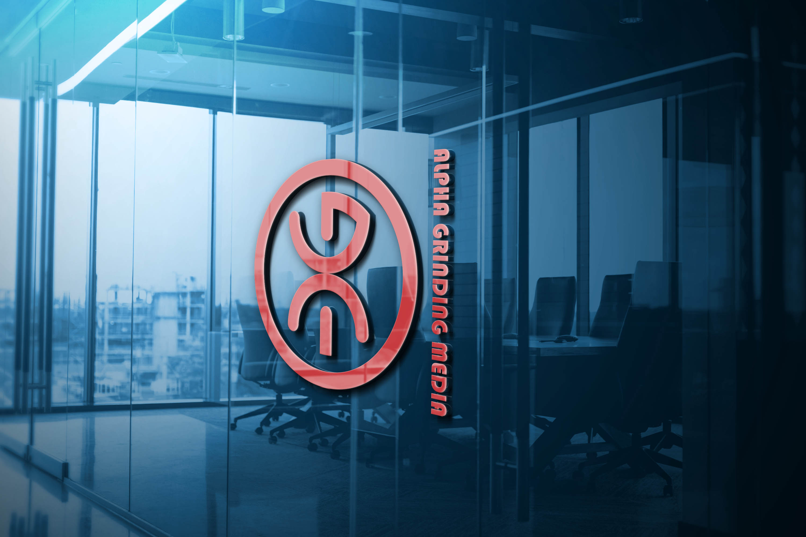

<!DOCTYPE html>
<html lang="en">
  <head>
    <meta charset="UTF-8" />
    <meta name="viewport" content="width=device-width, initial-scale=1.0" />
    <link rel="stylesheet" href="projects.css" />
    <link
      href="https://cdn.jsdelivr.net/npm/bootstrap@5.0.2/dist/css/bootstrap.min.css"
      rel="stylesheet"
      integrity="sha384-EVSTQN3/azprG1Anm3QDgpJLIm9Nao0Yz1ztcQTwFspd3yD65VohhpuuCOmLASjC"
      crossorigin="anonymous"
    />
    <script
      src="https://cdn.jsdelivr.net/npm/bootstrap@5.0.2/dist/js/bootstrap.bundle.min.js"
      integrity="sha384-MrcW6ZMFYlzcLA8Nl+NtUVF0sA7MsXsP1UyJoMp4YLEuNSfAP+JcXn/tWtIaxVXM"
      crossorigin="anonymous"
    ></script>
    <link rel="preconnect" href="https://fonts.googleapis.com" />
    <link rel="preconnect" href="https://fonts.gstatic.com" crossorigin />
    <link
      href="https://fonts.googleapis.com/css2?family=Playfair+Display:wght@600&family=Poppins&display=swap"
      rel="stylesheet"
    />
    <link
      rel="stylesheet"
      href="https://kit.fontawesome.com/a3766ded06.css"
      crossorigin="anonymous"
    />
    <script
      src="https://kit.fontawesome.com/a3766ded06.js"
      crossorigin="anonymous"
    ></script>

    <title>Faezeh Amlahi</title>
  </head>
</html>
<body>
  <div class="page mt-4">
    <a href="./index.html#portfolio" class="homepageButton">
      <i class="fa-solid fa-circle-left"></i> Back to Homepage</a
    >
    <div class="content text-center">
      <div class="container">
        <div class="row text-center">
          <div class="col-12 mt-lg-5 mt-2 col-lg-6">
            
          </div>
          <div class="col-12 mt-lg-5 mt-2 col-lg-6">
            <div class="discript mb-4">
              <h4>Alpha Grinding media 2022</h4>
              <p class="discription">
                Done as a professional. <br />
                Alpha Grinding Media operates internationally and is established
                in Turkey. This company is a grinding media supplier. It was
                attempted to draw creative inspiration for the logo from the
                first letters of the company name, the product produced, and the
                production machine.
              </p>
            </div>
          </div>
        </div>
      </div>
      <hr />
      <div class="container">
        <div class="row text-center">
          <div class="col-12 mt-lg-5 mt-2 col-lg-6">
            
          </div>
          <div class="col-12 mt-lg-5 mt-2 col-lg-6">
            <div class="discript mb-4">
              <h4>Arzhan 2022</h4>
              <p class="discription">
                Done as a professional. <br />
                According to the business context of Arzhan Company, it is a
                symbol of business and universality, which is located here in
                the form of a circle, and the focus is to design and insert the
                first letter of the logo.
              </p>
            </div>
          </div>
        </div>
      </div>
      <hr />
      <div class="container">
        <div class="row text-center">
          <div class="col-12 mt-lg-5 mt-2 col-lg-6">
            
          </div>
          <div class="col-12 mt-lg-5 mt-2 col-lg-6">
            <div class="discript mb-4">
              <h4>Nemodar Online 2021</h4>
              <p class="discription">
                Done as a professional. <br />
                As a news and analysis website in the field of financial
                markets, the online chart will play a role, and in order to
                display this topic, it was decided to use the circle form, which
                is a symbol of the coin as well as being global and
                international, and a symbol of the chart is drawn in the circle.
                It has been used.
              </p>
            </div>
          </div>
        </div>
      </div>
    </div>
  </div>
</body>
